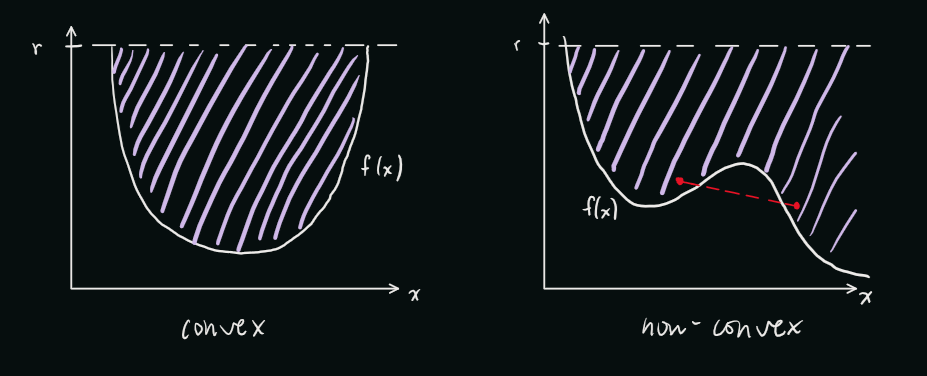
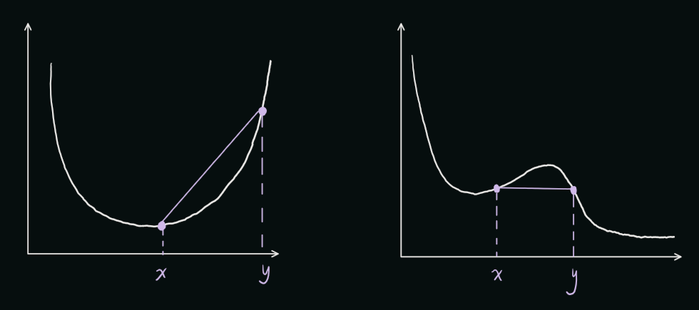
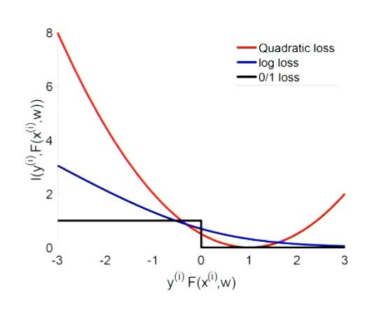
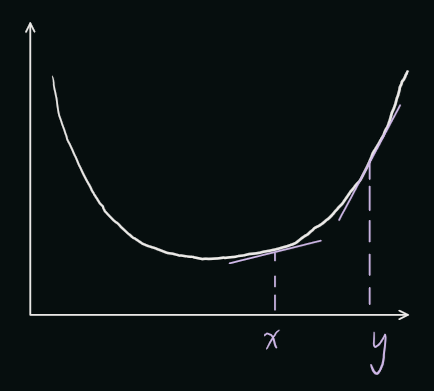

Optimization Part 1
Optimizing w for logistic regression
Recall the minimizer of the logistic regression algorithm:
$$
\min_w \sum_{(x^i, y^i \in D)} log(1 + e^{-y^i w^T \phi (x^i)}) = f(w)
$$
We know that for a convex problem, we have hit a minimizer if the gradient is 0.
We can use gradient descent to iteratively find smaller and smaller gradients till we get as close to 0 as possible, providing a relatively optimal minimizer.
Many ML optimization problems are solved with a variant of gradient descent. The derived minimzer gradient is:
$$
\nabla_w f(w) = \sum_{(x^i, y^i) \in D} \frac{-y^i \phi(x^i) e^{-y^i w^T \phi(x^i)}}{1 + e^{-y^i w^T \phi(x^i)}}
$$
Pseudocode:
- Initialize t=0, \(w_t\), and stepsize \(\alpha\)
- Compute gradient \(g_t = \nabla_w f(w_t) \)
- Update parameters \(w_{t+1} \leftarrow w_t - \alpha g_t \)
- Update \(t \leftarrow t+1 \)
Consider what happens if \(f(w)\) isn't convex, as in there are bumps in the function?

Figure 1. Possible min points of \(f(w)\)
Gradient descent will target all 3 of those points since the gradients at those points are all 0, when we only want to target the global minimizer. We will attempt to solve this problem through the rest of this lecture and the next one.
Convex Sets
Convex sets are useful for defining convex functions, which we need in order to deterine if gradient descent can be reliably used to find the minimizer of a loss function. A set is convex if it contains all line segments that can be formed by any 2 points within the set.

Figure 2. Convex Set Example
The set on the left is not convex because there exists 2 points in the set where the line between them is not inside the set. The set on the right is convex because all lines formed between any 2 points lie within the set. More formally, \(C \subseteq \mathbb{R}^d\) is convex when $$\{x,y\} \subseteq C \Rightarrow [x,y] \subseteq C$$ $$[x,y] = \{\alpha x + (1-\alpha)y : \alpha \in [0,1]\}$$
Convex Hull
A convex hull is the smallest set that contains given data points.

Figure 3. Convex Hull Example
In the example above, the white points are the given points. And the convex hull is the set formed by the purple lines, as it a rubber band was put around the points.
For a non-infinite set \(S = (x_1, x_2, ... x_k)\), the convex hull is simply all convex combinations of the points. In other words, it's the intersection of all lines formed between all points in \(S\). More formally, $$conv(S) = \{ \sum_{i=1}^k \alpha_i x_i : \alpha_i \geq 0, \sum_{i=1}^k \alpha_i = 1 \}$$
Convex Function
Recall from calculus the epigraph of a function. It is defined as a set of all the points and values of the function less than some line. $$ epi(f) = \{(x,r) : x \in \mathbb{R}^d, r \in \mathbb{R}, f(x) \leq r\} $$ The intuition is we can think of it as water filling the function where the set formed by the water is the set formed by the epigraph function as can be seen in Figure 4. We are able to formally define a convex function by a convex set.
Theorem: f is a convex function when epi(f) is a convex set.

Figure 4. Convex Function Waterfill
As we can see, the shaded area is epi(f) and the graph on the right is non-convex because epi(f) is non-convex. Alternatively, based on the epigraph theorem, we can algebraically define that for any \(x,y \in \mathbb{R}^d\) and \(\alpha \in [0,1]\), f is a convex function when... $$ f(\alpha x + (1- \alpha)y) \leq \alpha (x) + (1-\alpha)f(y) $$ In other words, f is a convex function if f of a linear combination of points is less than a convex combination of function values. In the figure below, we choose points \(x,y \in \mathbb{R}^d\). In the left graph, we can see that the \(f(x)\) is always underneath the line formed by \(x\) and \(y\), meaning it is convex. In the right graph, the opposite is true, meaning it is non-convex.

Figure 5. Algebraic Form of Epigraph Theorem Visualized
Convex Loss
Convexity indicates that there are no bumps on the function, and therefore, gradient descent works to find the minimizer. To review squared and logistic loss:

Figure 6. Squared loss vs logistic loss
Informally, we can clearly see that both quadratic loss and log loss are convex (proven formally, they are!). We can also see that 0/1 loss is non-convex.
Various Ways to Check Convexity
The first way is the Line Segment Method described above.
For any \(x,y \in \mathbb{R}^d\) and \(\alpha \in [0,1]\), f is a convex function when... $$ f(\alpha x + (1- \alpha)y) \leq \alpha f(x) + (1-\alpha)f(y) $$ The second way is the Derivatives Method:
For all \(x,y\), $$ f(y) \geq f(x) + \nabla f(x)^T(y-x) $$ Intuitively, this is simply saying that if \(y \geq x\), then the gradient at \(y\) must be larger than the gradient at \(x\).

Figure 7. Visualization of Derivatives Method
Levels of Convexity
There are 2 levels of convexity that should be noted. There is strict convexity, where the inequality defining the convexity of a function is strict: $$ f(\alpha x + (1- \alpha)y) < \alpha f(x) + (1-\alpha)f(y) $$ Graphically, this means that the line between points \(x\) and \(y\) remains strictly above the graph, it cannot be equivalent to the graph at any point. Logistic loss \(ln(1+e^{-z})\) is strictly convex.
This is also \(\lambda\)-strong convexity: $$ f(\alpha x + (1- \alpha)y) \leq \alpha f(x) + (1-\alpha)f(y) - \frac{\lambda \alpha (1-\alpha)}{2}||x-y||^2 $$ In this case, there is a quadratic gap between function values and the line formed by \(x\) and \(y\). The intuition is that we can lower bound the function by a quadratic. Squared loss \(\frac{1}{2}(1-z)^2 \) is 1-strongly convex.